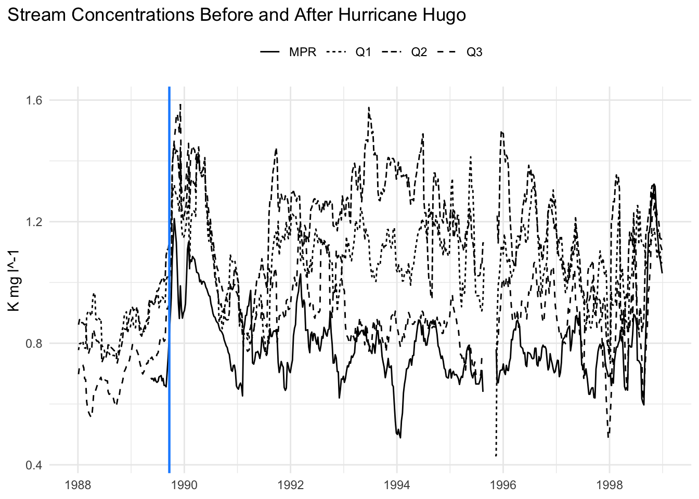
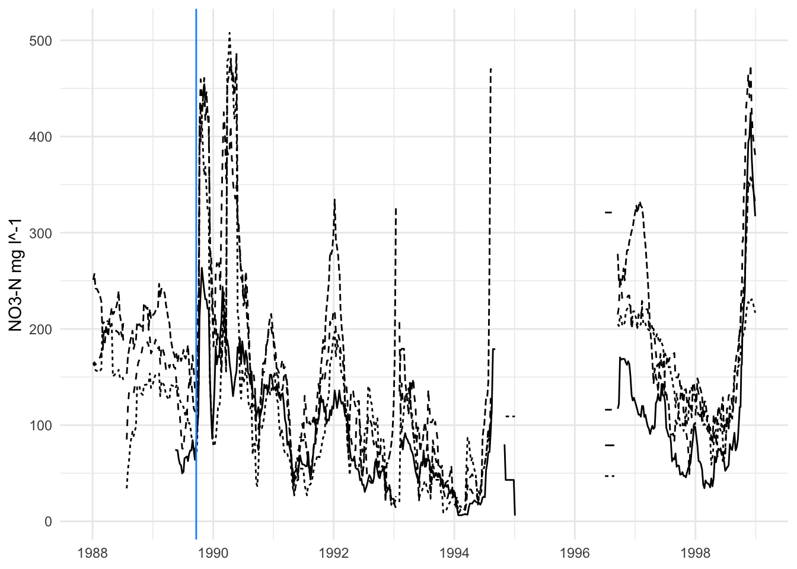
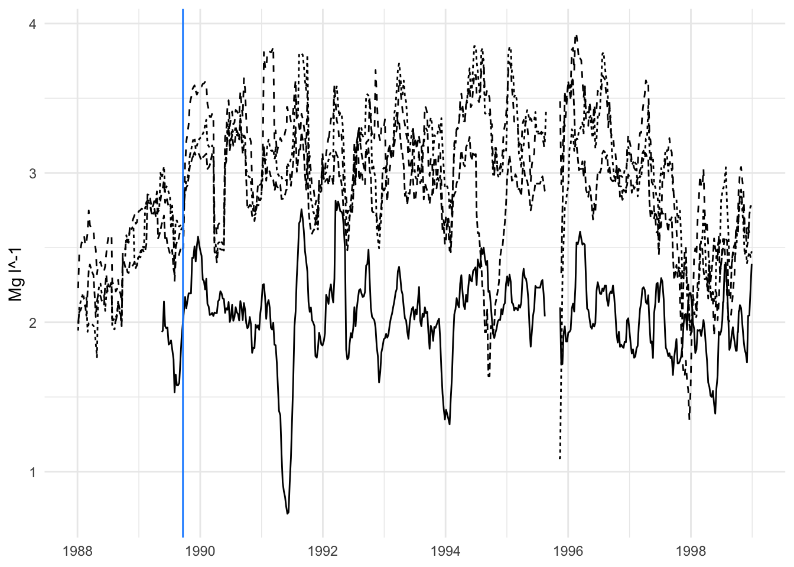
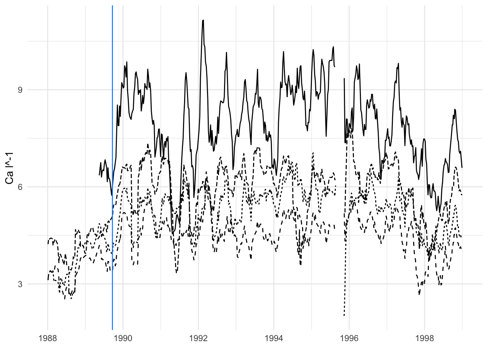
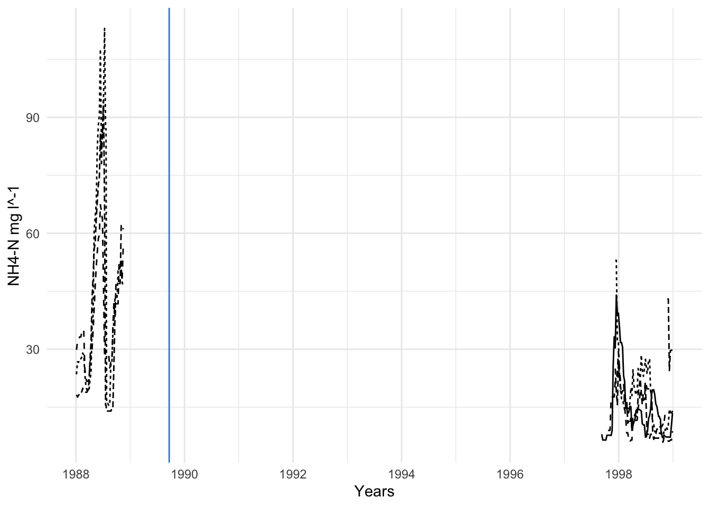
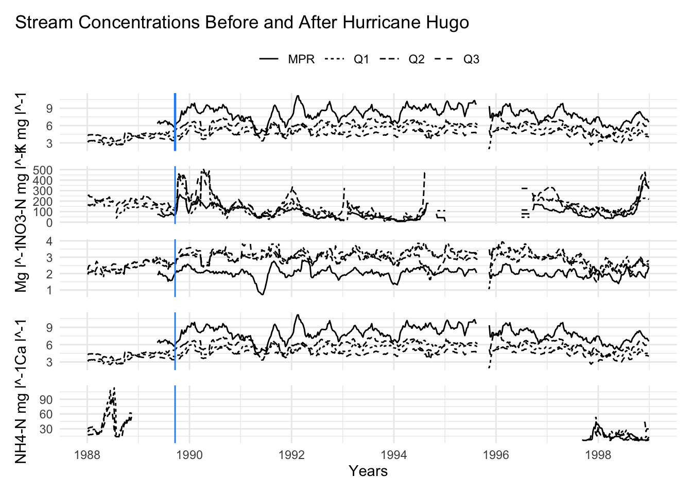

# load in libraries ------------------------------------------------------------
library(tidyverse)
library(here)
library(lubridate)
library(janitor)
library(patchwork)Puerto Rico Stream Analysis
Jaslyn Miura
jaslyntmiura@ucsb.edu
Background
Within this analysis we examine Puerto Rico’s stream nutrient concentrations before and after a disturbance. Background information and data was obtained from the following sources:
Schaefer DouglasA, McDowell WH, Scatena FN, Asbury CE. Effects of hurricane disturbance on stream water concentrations and fluxes in eight tropical forest watersheds of the Luquillo Experimental Forest, Puerto Rico. Journal of Tropical Ecology. 2000;16(2):189-207. doi:10.1017/S0266467400001358
McDowell, W. and International Institute of Tropical Forestry(IITF), USDA Forest Service.. 2024. Chemistry of stream water from the Luquillo Mountains ver 4923064. Environmental Data Initiative. https://doi.org/10.6073/pasta/f31349bebdc304f758718f4798d25458 (Accessed 2025-08-29).
Data
For this analysis, we focused on four sites Puente Roto Mameyes (MPR), Quebrada one-Bisley (Q1), Quebrada two-Bisley (Q2), and Quebrada three-Bisley (Q3) within a ten year time period, 1988 -1998. We analyzed the concentration levels of potassium, nitrate nitrogen, magnesium, calcium, and ammonium nitrate.
# using source to call in our cleaned data and functions that were created in a separate R script
source(here("scratch", "data_cleaning_and_tidying.R"))
source(here("moving_avg_func.R"))Methods
To smooth out the data and identify trends in the data a nine week moving average for each nutrient concentration was calculated.
# using the moving_average function to calculate the moving average of concentrations
stream_moving_avg <- stream_data %>%
group_by(sample_id, nutrient) %>%
mutate(sample_id = as.factor(sample_id),
nutrient = as.factor(nutrient)) %>%
mutate(moving_avg = sapply(
sample_date,
moving_average,
dates = as.Date(sample_date),
conc = concentration,
win_size_wks = 9
))
head(stream_moving_avg, n = 15)# A tibble: 15 × 5
# Groups: sample_id, nutrient [5]
sample_id sample_date nutrient concentration moving_avg
<fct> <date> <fct> <dbl> <dbl>
1 MPR 1989-05-16 k 0.77 0.686
2 MPR 1989-05-16 no3_n 69 74.4
3 MPR 1989-05-16 mg 1.92 1.94
4 MPR 1989-05-16 ca 6.15 6.35
5 MPR 1989-05-16 nh4_n NA NaN
6 MPR 1989-05-23 k 0.72 0.682
7 MPR 1989-05-23 no3_n 69 73.8
8 MPR 1989-05-23 mg 2.41 1.94
9 MPR 1989-05-23 ca 7.17 6.57
10 MPR 1989-05-23 nh4_n NA NaN
11 MPR 1989-05-30 k 0.7 0.684
12 MPR 1989-05-30 no3_n 79 73.8
13 MPR 1989-05-30 mg 1.6 2.14
14 MPR 1989-05-30 ca 5.19 6.75
15 MPR 1989-05-30 nh4_n NA NaN Results
After determining the moving average, plots for each nutrient was created. Hurricane Hugo was also defined as the disturbance in this analysis as 1989-09-20 (a midpoint date of the event).
Creating each nutrient concentration graph.
# plotting potassium concentrations
potassium_plot <- ggplot(data = potassium_moving_avg,
aes(x = sample_date, y = moving_avg, linetype = sample_id)) +
geom_line() +
geom_vline(xintercept = hugo, color = "dodgerblue", linewidth = 0.8) +
theme_minimal() +
labs(title = "Stream Concentrations Before and After Hurricane Hugo",
x = NULL,
y = "K mg l^-1") +
theme(legend.title = element_blank()) +
theme(legend.position = "top" ) +
theme(plot.title.position = "plot")
potassium_plot
# plotting nitrate concentrations
nitrate_plot <- ggplot(data = nitrate_moving_avg,
aes(x = sample_date, y = moving_avg, linetype = sample_id)) +
geom_line() +
geom_vline(xintercept = hugo, color = "dodgerblue") +
theme_minimal() +
labs(x = NULL,
y = "NO3-N mg l^-1") +
theme(legend.position = "none")
nitrate_plot
# plotting magnesium concentrations
magnesium_plot <- ggplot(data = magnesium_moving_avg,
aes(x = sample_date, y = moving_avg, linetype = sample_id)) +
geom_line() +
geom_vline(xintercept = hugo, color = "dodgerblue") +
theme_minimal() +
labs(x = NULL,
y = "Mg l^-1") +
theme(legend.position = "none")
magnesium_plot
# plotting calcium concentrations
calcium_plot <- ggplot(data = calcium_moving_avg,
aes(x = sample_date, y = moving_avg, linetype = sample_id)) +
geom_line() +
geom_vline(xintercept = hugo, color = "dodgerblue") +
theme_minimal() +
labs(x = NULL,
y = "Ca l^-1") +
theme(legend.position = "none")
calcium_plot
# plotting ammonium nitrate concentrations
amm_nitrate_plot <- ggplot(data = amm_nitrate_moving_avg,
aes(x = sample_date, y = moving_avg, linetype = sample_id)) +
geom_line() +
geom_vline(xintercept = hugo, color = "dodgerblue") +
theme_minimal() +
labs(x = "Years",
y = "NH4-N mg l^-1") +
theme(legend.position = "none")
amm_nitrate_plot
Combining individual concentration graphs to compare concentration levels.
# using patchwork to combine all our nutrient graphs into one final figure
figure_3 <- (potassium_plot / nitrate_plot / magnesium_plot / calcium_plot / amm_nitrate_plot) +
plot_layout(axes = "collect")
figure_3
#|include: FALSE
# saving our final figure into our figs folder
ggsave(here("figs", "figure_3.png"), height = 8, width = 6)After the occurrence of a disturbance in Puerto Rico, such as Hurricane Hugo, there appears to be an increase in fluctuations of nutrient concentrations for about two years.